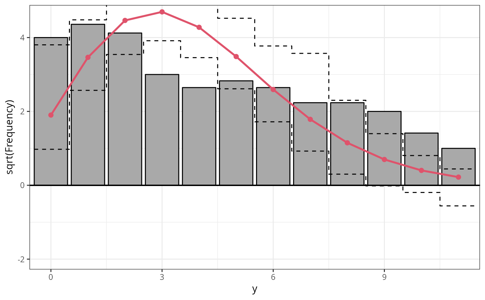
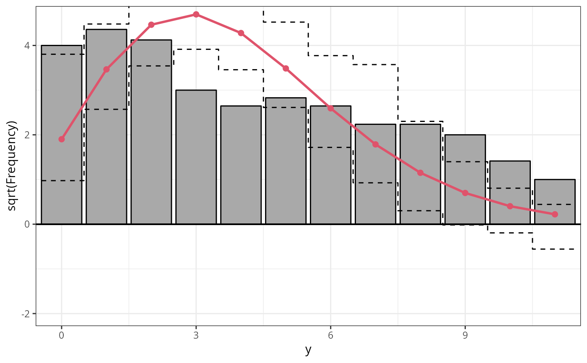
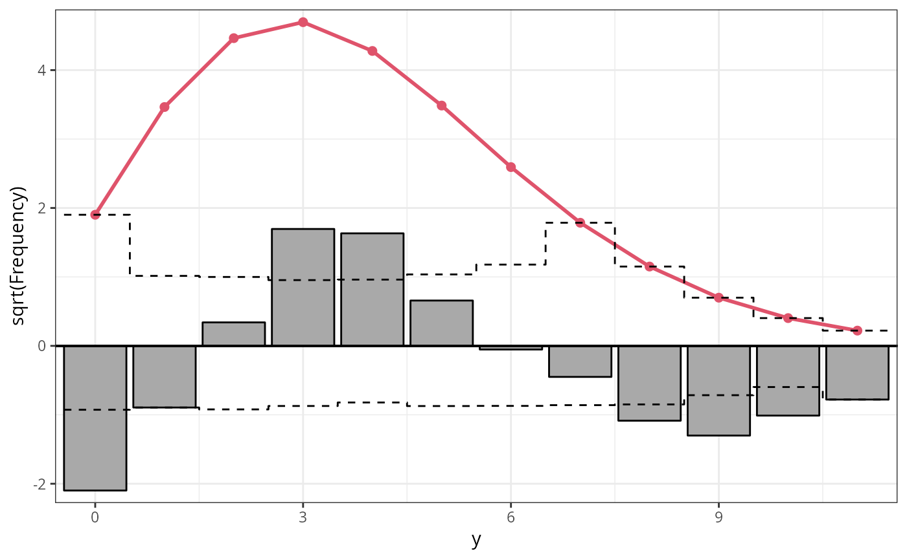
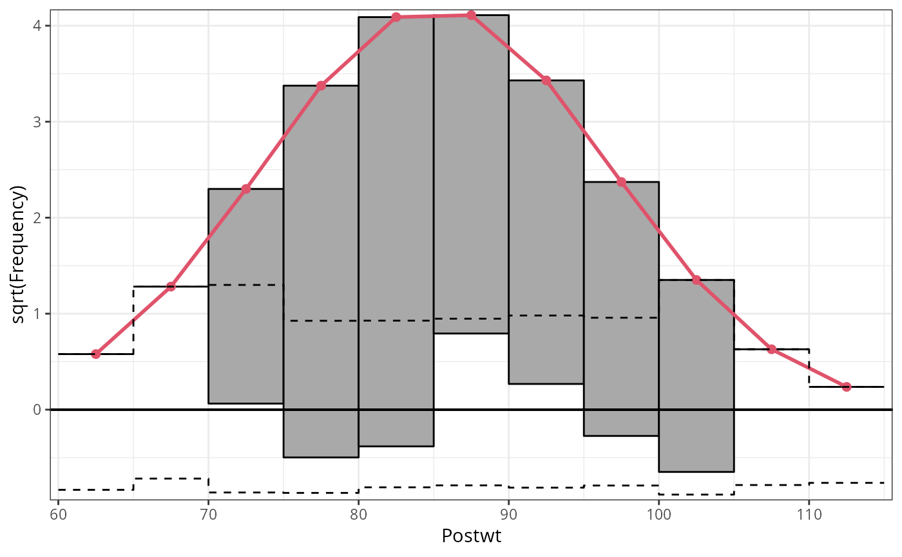
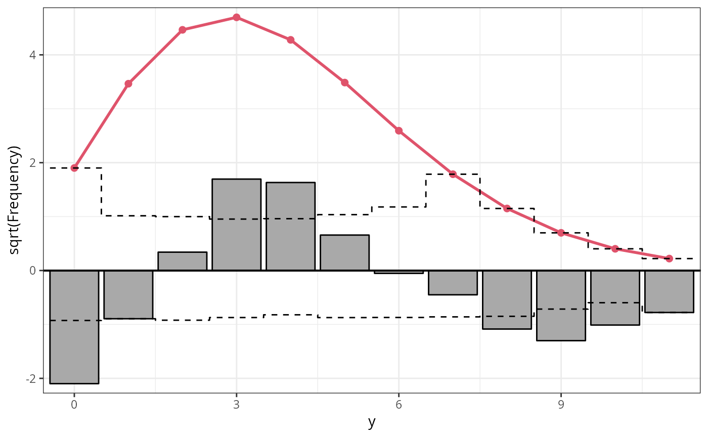
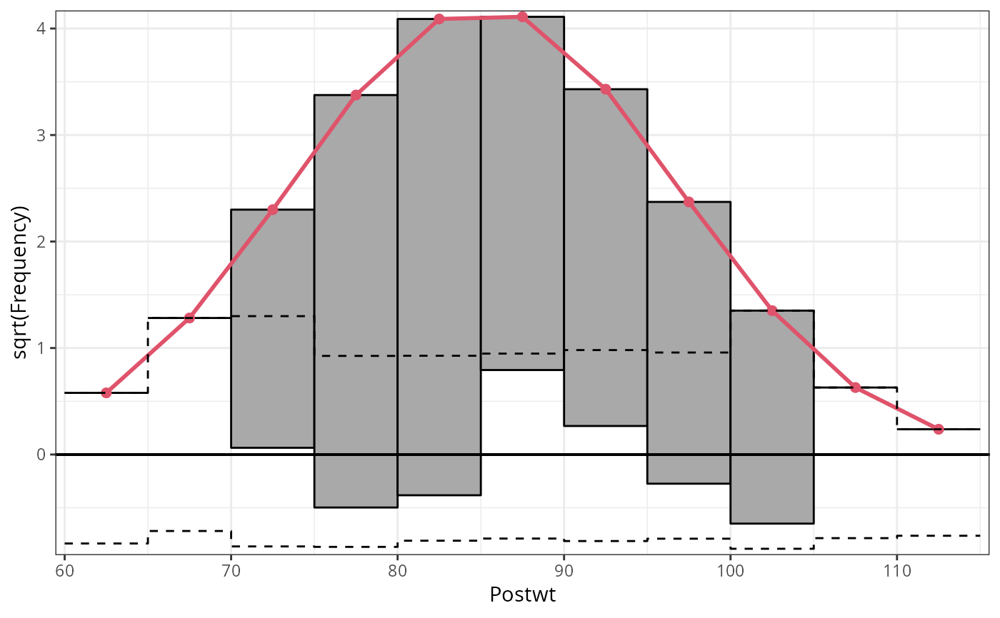

Rootograms for Assessing Goodness of Fit of Probability Models
rootogram.RdRootograms graphically compare (square roots) of empirical frequencies with
expected (fitted) frequencies from a probabilistic model. If plot = TRUE, the
resulting object of class "rootogram" is plotted by
plot.rootogram or autoplot.rootogram before it is
returned, depending on whether the package ggplot2 is loaded.
rootogram(object, ...)
# S3 method for default
rootogram(
object,
newdata = NULL,
plot = TRUE,
class = NULL,
breaks = NULL,
width = NULL,
style = c("hanging", "standing", "suspended"),
scale = c("sqrt", "raw"),
expected = TRUE,
confint = TRUE,
ref = TRUE,
xlab = NULL,
ylab = NULL,
main = NULL,
...
)Arguments
- object
an object from which an rootogram can be extracted with
procast.- ...
further graphical parameters passed to the plotting function.
- newdata
an optional data frame in which to look for variables with which to predict. If omitted, the original observations are used.
- plot
logical or character. Should the
plotorautoplotmethod be called to draw the computed extended reliability diagram? LogicalFALSEwill suppress plotting,TRUE(default) will choose the type of plot conditional if the packageggplot2is loaded. Alternatively"base"or"ggplot2"can be specified to explicitly choose the type of plot.- class
should the invisible return value be either a
data.frameor atbl_df. Can be set to"data.frame"or"tibble"to explicitly specify the return class, or toNULL(default) in which case the return class is conditional on whether the package"tibble"is loaded.- breaks
NULL(default) or numeric to manually specify the breaks for the rootogram intervals. A single numeric (larger0) specifies the number of breaks to be automatically chosen, multiple numeric values are interpreted as manually specified breaks.- width
NULL(default) or single positive numeric. Width of the histogram bars. Will be ignored for non-discrete distributions.- style
character specifying the syle of rootogram (see 'Details').
- scale
character specifying whether
"raw"frequencies or their square roots ("sqrt"; default) should be drawn.- expected
logical or character. Should the expected (fitted) frequencies be plotted? Can be set to
"both"(same asTRUE; default),"line","point", orFALSEwhich will suppress plotting.- confint
logical, defaults to
TRUE. Should confident intervals be drawn?- ref
logical, defaults to
TRUE. Should a reference line be plotted?- xlab, ylab, main
graphical parameters forwarded to
plot.rootogramorautoplot.rootogram.
Value
An object of class "rootogram" inheriting from
"data.frame" or "tibble" conditional on the argument class
with the following variables:
- observed
observed frequencies,
- expected
expected (fitted) frequencies,
- mid
histogram interval midpoints on the x-axis,
- width
widths of the histogram bars,
- confint_lwr, confint_upr
lower and upper confidence interval bound.
Additionally, style, scale, expected, confint,
ref, xlab, ylab, amd main are stored as attributes.
Details
Rootograms graphically compare frequencies of empirical distributions and
expected (fitted) probability models. For the observed distribution the histogram is
drawn on a square root scale (hence the name) and superimposed with a line
for the expected frequencies. The histogram can be "hanging" from the
expected curve (default), "standing" on the (like bars in barplot),
or drawn as a "suspended" histogram of deviations.
The function rootogram leverages the procast
generic in order to compute all necessary coordinates based on observed and
expected (fitted) frequencies.
In addition to the plot and autoplot method for
rootogram objects, it is also possible to combine two (or more) rootograms by
c/rbind, which creates a set of rootograms that can then be
plotted in one go.
Note
Note that there is also a rootogram function in the
vcd package that is similar to the numeric method provided
here. However, it is much more limited in scope, hence a function has been
created here.
References
Friendly M (2000), Visualizing Categorical Data. SAS Institute, Cary, ISBN 1580256600.
Kleiber C, Zeileis A (2016). “Visualizing Count Data Regressions Using Rootograms.” The American Statistician, 70(3), 296--303. doi:10.1080/00031305.2016.1173590 .
Tukey JW (1977). Exploratory Data Analysis. Addison-Wesley, Reading, ISBN 0201076160.
See also
Examples
## plots and output
## number of deaths by horsekicks in Prussian army (Von Bortkiewicz 1898)
deaths <- rep(0:4, c(109, 65, 22, 3, 1))
## fit glm model
m1_pois <- glm(deaths ~ 1, family = poisson)
rootogram(m1_pois)
 ## inspect output (without plotting)
r1 <- rootogram(m1_pois, plot = FALSE)
r1
#> A `rootogram` object with `scale = 'sqrt'` and `style = 'hanging'`
#>
#> observed expected mid width
#> 1 10.440307 10.4244987 0 0.9
#> 2 8.062258 8.1417938 1 0.9
#> 3 4.690416 4.4964526 2 0.9
#> 4 1.732051 2.0275628 3 0.9
#> 5 1.000000 0.7917886 4 0.9
## combine plots
plot(c(r1, r1), col = c(1, 2), expected_col = c(1, 2))
#-------------------------------------------------------------------------------
## different styles
## artificial data from negative binomial (mu = 3, theta = 2)
## and Poisson (mu = 3) distribution
set.seed(1090)
y <- rnbinom(100, mu = 3, size = 2)
x <- rpois(100, lambda = 3)
## glm method: fitted values via glm()
m2_pois <- glm(y ~ x, family = poisson)
## correctly specified Poisson model fit
par(mfrow = c(1, 3))
r1 <- rootogram(m2_pois, style = "standing", ylim = c(-2.2, 4.8), main = "Standing")

r2 <- rootogram(m2_pois, style = "hanging", ylim = c(-2.2, 4.8), main = "Hanging")
## inspect output (without plotting)
r1 <- rootogram(m1_pois, plot = FALSE)
r1
#> A `rootogram` object with `scale = 'sqrt'` and `style = 'hanging'`
#>
#> observed expected mid width
#> 1 10.440307 10.4244987 0 0.9
#> 2 8.062258 8.1417938 1 0.9
#> 3 4.690416 4.4964526 2 0.9
#> 4 1.732051 2.0275628 3 0.9
#> 5 1.000000 0.7917886 4 0.9
## combine plots
plot(c(r1, r1), col = c(1, 2), expected_col = c(1, 2))
#-------------------------------------------------------------------------------
## different styles
## artificial data from negative binomial (mu = 3, theta = 2)
## and Poisson (mu = 3) distribution
set.seed(1090)
y <- rnbinom(100, mu = 3, size = 2)
x <- rpois(100, lambda = 3)
## glm method: fitted values via glm()
m2_pois <- glm(y ~ x, family = poisson)
## correctly specified Poisson model fit
par(mfrow = c(1, 3))
r1 <- rootogram(m2_pois, style = "standing", ylim = c(-2.2, 4.8), main = "Standing")

r2 <- rootogram(m2_pois, style = "hanging", ylim = c(-2.2, 4.8), main = "Hanging")
 r3 <- rootogram(m2_pois, style = "suspended", ylim = c(-2.2, 4.8), main = "Suspended")

par(mfrow = c(1, 1))
#-------------------------------------------------------------------------------
## linear regression with normal/Gaussian response: anorexia data
data("anorexia", package = "MASS")
m3_gauss <- glm(Postwt ~ Prewt + Treat + offset(Prewt), family = gaussian, data = anorexia)
## plot rootogram as "ggplot2" graphic
rootogram(m3_gauss, plot = "ggplot2")

r3 <- rootogram(m2_pois, style = "suspended", ylim = c(-2.2, 4.8), main = "Suspended")

par(mfrow = c(1, 1))
#-------------------------------------------------------------------------------
## linear regression with normal/Gaussian response: anorexia data
data("anorexia", package = "MASS")
m3_gauss <- glm(Postwt ~ Prewt + Treat + offset(Prewt), family = gaussian, data = anorexia)
## plot rootogram as "ggplot2" graphic
rootogram(m3_gauss, plot = "ggplot2")
